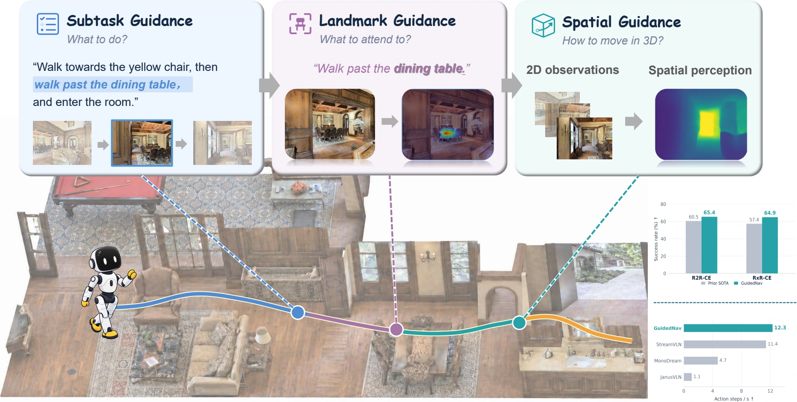
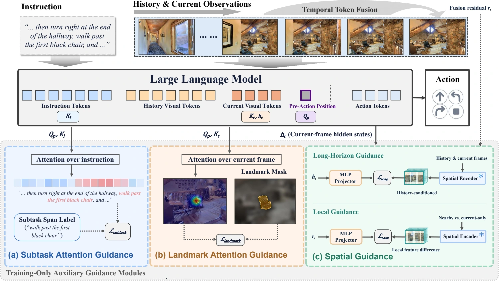
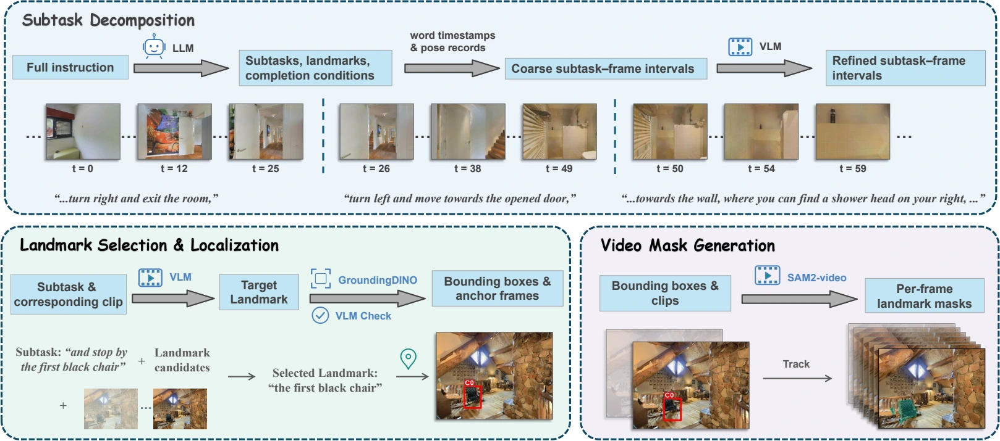
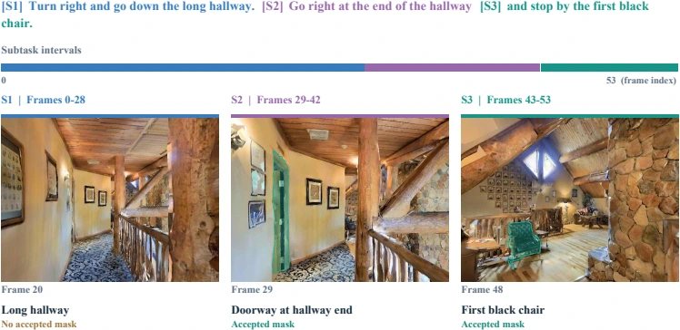
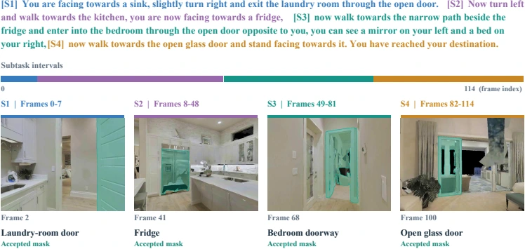

Track the active instruction
Align pre-action attention with the instruction segment relevant to the current navigation step.
Anonymous research materials · ICLR 2027
Guide the evidence behind an action.
Learn navigation representations that track progress, ground landmarks, and capture geometry.

The idea
Vision-and-language navigation requires an agent to track progress through an extended instruction, identify landmarks relevant to its current objective, and understand the surrounding spatial structure. Action supervision alone can leave these capabilities implicit.
GuidedNav shapes the representations that connect instructions to actions. Subtask and landmark guidance steer native pre-action attention toward the active instruction segment and relevant visual regions. Spatial guidance aligns internal representations with geometric features that capture long-horizon context and local spatial structure.
The learned policy predicts actions directly at inference, without intermediate textual reasoning or online geometric encoding. Guided-R2R and Guided-RxR provide annotation-enriched navigation data to support this training.
Method
Auxiliary supervision is used during training.
Navigation actions remain the inference output.

Align pre-action attention with the instruction segment relevant to the current navigation step.
Focus representation learning on the landmarks that support the current navigation objective.
Transfer geometric structure to the policy during training, without an online geometry encoder.
Annotation-enriched training data
Guided-R2R and Guided-RxR connect instruction segments, trajectory intervals, and visual landmark masks.

GUIDED-R2R
Reuses FGR2R subtasks and maps them onto continuous trajectories using recorded poses.

GUIDED-RXR
Decomposes English RxR instructions and refines temporal intervals before localizing landmarks and propagating masks.

These videos show expert observation sequences and generated annotations. Missing or unreliable labels disable the corresponding auxiliary loss while preserving action supervision. The annotations are training supervision and are not policy inputs at inference.
Final paper model
Monocular RGB · val-unseen
Four actions executed per prediction
Progress, grounding,
and geometry.
| Benchmark | Episodes | NE ↓ (m) | OS ↑ (%) | SR ↑ (%) | SPL ↑ (%) | nDTW ↑ (%) |
|---|---|---|---|---|---|---|
| R2R-CE val-unseen | 1,839 | 3.83 | 71.45 | 65.42 | 59.07 | — |
| RxR-CE val-unseen English | 3,669 | 4.40 | — | 64.92 | 54.33 | 69.20 |
Training history includes prior DAgger data. The final supervised adaptation stage uses subtask and landmark annotations without adding DAgger or VQA samples in that stage. English RxR results should be compared with the corresponding language subset and evaluation protocol.
Reproduction resources
Code and setup instructions are available.
Large data and model files are not yet hosted.
Read the environment guide and data guide for dependencies, simulator setup, recorded-pose RGB rendering, annotation layout, and required third-party assets.
The training instructions and final recipe specify the exact navigation-initialized base, previous-stage initialization, auxiliary losses, and reference distributed setup.
The source snapshot provides frame-policy inference and benchmark evaluation, with exact model-identity checks and the recorded prompt, history, and temporal-fusion protocol.
The selected model requires the exact navigation-initialized base plus its adapter and auxiliary weights. An adapter alone, paired with a stock Qwen3-VL model, does not reproduce this model. The complete weights and frozen annotation bundle are prepared separately and currently have no public download URL.
Validation: CPU module and CLI checks, four real training-sample decode/collate checks, and benchmark configuration checks passed. Full GPU retraining, 8B generation, and full benchmark reruns were not performed during packaging. See the validation record.
Third-party foundations: Qwen3-VL, VGGT, Habitat, Matterport3D, R2R, RxR, and FGR2R. Third-party code, models, and datasets remain subject to their respective licenses and access terms. Restricted scene data is not redistributed here.